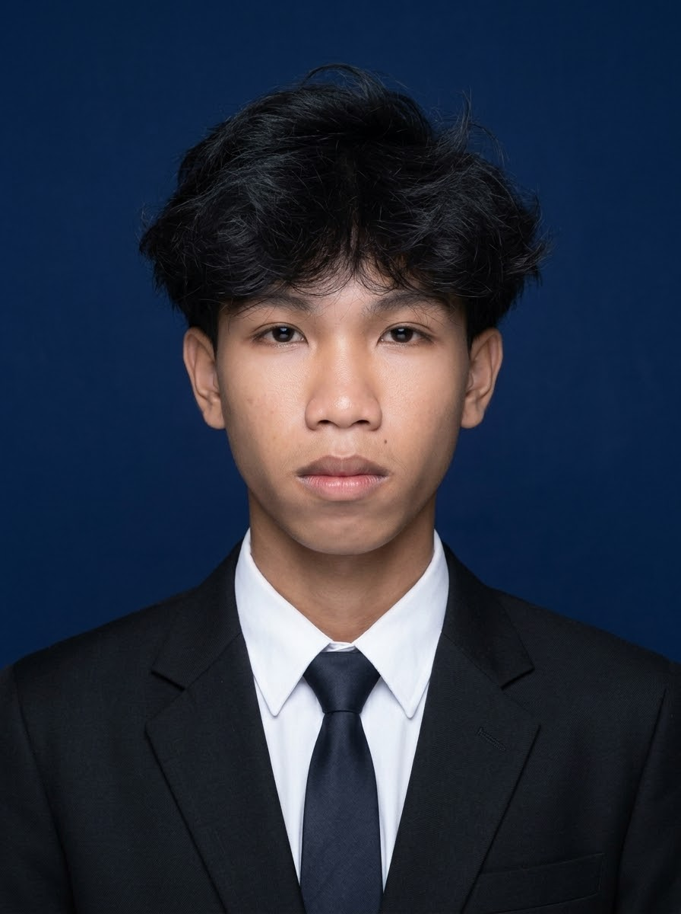

Universitas Mandiri, Fakultas Teknik
2026 - sekarang
S1 Sistem Informasi

Mahasiswa Sistem Informasi, Universitas Mandiri
Halo! Saya mahasiswa yang sedang belajar pengembangan web. Saya tertarik membuat website yang rapi, mudah digunakan, dan bermanfaat.
| Tempat, Tgl Lahir | : Subang, 4 Maret 2008 |
| Jenis Kelamin | : Laki-laki |
| Agama | : Islam |
| Alamat | : Jl.Handiwung, RT 03/RW 02, Kec.Pagaden, Kab.Subang, Jawa Barat |
| : dimasageng430@gmail.com | |
| No. HP / WA | : 0852-1010-3690 |
2026 - sekarang
S1 Sistem Informasi
2023 - 2026
Jurusan Teknik Jaringan Komputer dan Telekomunikasi
2020 - 2023
2014 - 2020
Pekerjaan yang saya lakukan selama berada di gudang yaitu Picking & Packing
Pekerjaan yang saya lakukan selama bekerja PT.Meiloon Technology yaitu mencetak produk menggunakan mesin INJECTION
NO HP / WA : 0852-1010-3690
Email : dimasageng430@gmail.com
Instagram : quetzaloctli.iii